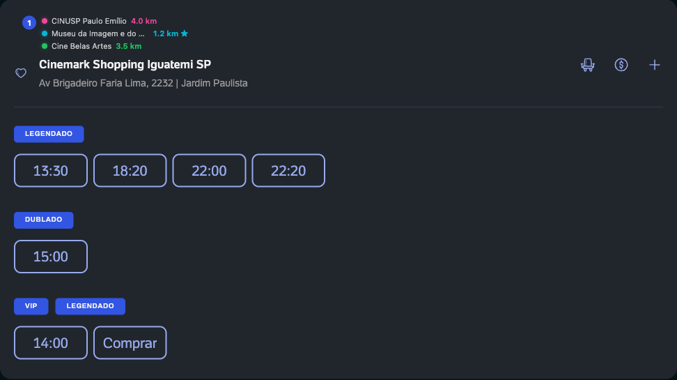

Mapa embutido
Painel integrado ao layout do ingresso.com, com pins numerados por proximidade.
Extensão para Chrome que embute um mapa interativo na página do filme. Veja todos os cinemas, compare distâncias e descubra a sala ideal — sozinho ou com amigos.

Painel integrado ao layout do ingresso.com, com pins numerados por proximidade.
Reordena a lista de cinemas e mostra a distância em km em cada card.
Use geolocalização, digite um endereço ou cole um link do Google Maps.
Adicione endereços de amigos e compare cinemas pelo centroide ou por pessoa.



A extensão não envia seus dados para servidores dos desenvolvedores. A localização é usada apenas para calcular distâncias no seu navegador. Leia a política de privacidade.